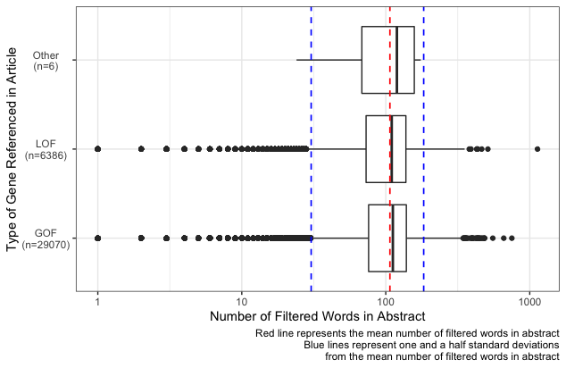
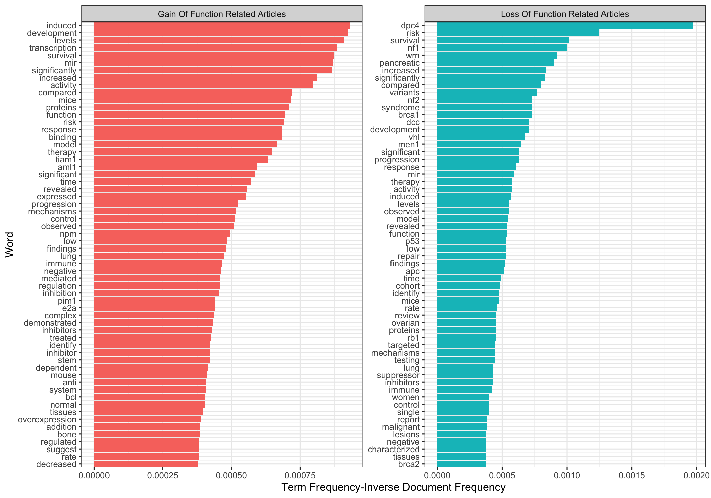

This is a follow up blog post for one I wrote a couple of weeks ago, if you haven’t read it then you can find it here.
So I have now successfully downloaded abstracts related to various genes known to be either gain of function or loss of function and therefore very important in cancer. I have never done NLP before and I’ve decided to try and run before I walk (because it’s more fun that way!), but one thing I do know is that it’s really important to get to know your data before you even touch a machine learning model.
One thing to note is that I did go back to the code I made last time and rather than discarding articles that didn’t fall into either the GOF or LOF category I just gave them the label "Other". As I had no idea where to even start with this, a lot of the inspiration for this post came from Julia Silge’s brilliant post ‘The Game Is Afoot! Topic Modeling Of Sherlock Holmes Stories’.
First thing is first, we need to load in our data.
library(tidyverse)
data <- read_delim("./data/02_data_preprocessing/processed_data.csv", delim = "\t")The problem now is that we want to analyse each individual word, not the abstracts as one long string. This might sound like a stringr nightmare, but luckily the tidytext package has got us covered
library(tidytext)
words <- data %>%
unnest_tokens(word, abstract) %>%
select(pubmed_id, word)## # A tibble: 6,860,738 × 2
## pubmed_id word
## <dbl> <chr>
## 1 262166 isolated
## 2 262166 and
## 3 262166 highly
## 4 262166 purified
## 5 262166 myeloma
## 6 262166 igd
## 7 262166 dek
## 8 262166 sta
## 9 262166 and
## 10 262166 sar
## # … with 6,860,728 more rowsNow that we have access to each of the words individually, we need to try and find only the ones that are going to be useful. The tidytext package has a really useful list of common “filler” words that appear in normal speech called stop_words, so I used an anti-join to remove these from our pool of words. Then came a lot of reading up on regex that I had never really used before. I wanted to only focus on words (not numbers) so I removed all words that didn’t contain at least one letter from A to Z; I removed any words that were of length 2 or less (as these were nearly all scientific units); I removed any words that had whitespace within them that hadn’t been properly split by unnest_tokens.
Then came a problem more specific to our context, there are a lot long random strings for some reason (probably some artefact of the web scraping process) like "l9kttorshmefzacnbmjx2pbdck7g6hjkdutdt5psrahfrtq", but how do we tell them apart from long scientific compound words like "acethylgalactosaminyltransferase"? Looking at the long nonsense words they either looked like random strings or web adresses. To deal with the web addresses I removed any words that contained ".", "_" or ":". To deal with the random strings I realised that all the ones I looked at contained numbers but I couldn’t remove any strings that had numbers in, as important genes have numbers in the (like P53) and I wanted those to stay in my data set. All the genes I know tend to have shorter names and so I settled for just removing all words that contained a number and were longer than 8 characters. I also removed any words that started with a number to try and stop any measurements (like "3mm") from working their way into the dataset. This was the final result:
# Filtering out unwanted words
filtered_words <- words %>%
# Removing common words
anti_join(stop_words) %>%
mutate(
# Removing whitespace from before and after each word
word = str_trim(word),
# Finding the length of each word
len = str_length(word)
) %>%
filter(
# Keeping only words that contain at least one letter
str_detect(word, "[A-Za-z]"),
# Keeping words with three or more letters
len > 2,
# Removing words that start with a number
str_starts(word, "[0-9]", negate = TRUE),
# Removing words that contain whitespace
str_detect(word, "\\s+", negate = TRUE),
# Removing words containing specific pieces of punctuation
str_detect(word, "\\.", negate = TRUE),
str_detect(word, "\\_", negate = TRUE),
str_detect(word, "\\:", negate = TRUE),
# Removing any words with 9 or more letters that contain a number
!(str_detect(word, "[0-9]") & (len > 8))
)We have more information than just the words though, we also know what articles they are from. We have seen that there are some long random strings in our dataset which suggests that our web scraping from my previous post may not have been as successful as first thought. To look at this, I counted the number of words in each abstract
# Finding the number of filtered words in each abstract
word_count <- filtered_words %>%
group_by(pubmed_id) %>%
summarise(
count = n()
) %>%
# Adding gene_type information for each article
left_join(
data %>% select(pubmed_id, gene_type)
)I then plotted these results (all plotting code is in the GitHub Repo)

As you can see, there are some suspiciously short and suspiciously long abstracts in this data set, bearing in mind that we have removed quite a few words. I played around with which abstracts to keep and which to discard, but I ended up settling with keeping a range 1.5 standard deviations around the mean (marked by the blue dashed lines in the plot).
filtered_articles <- word_count %>%
filter(
count < mean(count) + 1.5*sd(count),
count > mean(count) - 1.5*sd(count)
)
filtered_articles_vector <- filtered_articles$pubmed_id
word_data <- filtered_words %>%
filter(
pubmed_id %in% filtered_articles_vector
)Now we have done some basic preprocessing of the word data, lets start having a look at which words are more important to the different gene classifications. To do this I used a technique called “Term Frequency-Inverse Document Frequency”, or TF-IDF for short. This is a measure of how important a word is within a set of documents, in our case a set of abstracts.
The term frequency is given by
\[ tf(t,d) = \frac{f_{t,d}}{\sum_{t' \in d}f_{t',d}} \] where \(f_{t,d}\) is the number of times the word \(t\) appears in the abstract \(d\). This is a measure saying that out of all the times a given word was used, what proportion of those was in the given abstract?
The inverse document frequency is then given by
\[ idf(t, D) = \log\left[\frac{N}{\{d \in D:t \in d\}}\right] \] where \(t\) is a given word, \(D\) is our set of abstracts and \(N\) is the number of abstracts.
The tf-idf value is then given by multiplying the two together
\[ tfidf(t, d, D) = tf(t,d)\cdot idf(t, D) \]
A high tf-idf is reached when a word is common in one article and less common amongst others. These are likely to be words that an NLP algorithm will pick out to use to identify one documents, or document type, vs another. Let’s find out what the highest tf-idf scores are treating all of the abstracts from each gene type as one big document
gene_type_tf_idf <- word_data %>%
left_join(
data %>% select(pubmed_id, gene_type)
) %>%
group_by(word, gene_type) %>%
summarise(count = n()) %>%
bind_tf_idf(word, gene_type, count) %>%
ungroup()and then plot them

There’s a couple of interesting things in here, like P53 is a famous loss of function gene and it appears as important in the loss of function gene category. But really, our data isn’t 2 big abstracts, it is lots of small ones. So I recalculated the tf-idf scores for each word for each abstract. I then selected the top 50 words by tf-idf for each abstract and counted how many times these appeared for each gene type.
# Finding tf/idf per article
article_tf_idf <- word_data %>%
group_by(pubmed_id, word) %>%
summarise(count = n()) %>%
bind_tf_idf(word, pubmed_id, count) %>%
ungroup()
# Making data for plot
p_data <- article_tf_idf %>%
group_by(pubmed_id) %>%
arrange(-tf_idf) %>%
slice_head(n = 50) %>%
left_join(
data %>% select(pubmed_id, gene_type)
) %>%
ungroup() %>%
group_by(word, gene_type) %>%
summarise(count = n()) %>%
ungroup() %>%
filter(gene_type != "Other") %>%
group_by(gene_type) %>%
arrange(-count) %>%
slice_head(n = 60) %>%
ungroup() %>%
mutate(
order = -row_number()
)Here’s a plot of the results
From this we can see that there are words that regularly come up as useful for identification but appear in the top words for both the GOF and LOF categories. These seem to be common among certain subtypes of papers, for example both "patients" and "cells" are important, probably referencing different types of experiments, but this won’t help us tell the difference between GOF and LOF mutations. Therefore, I removed any word that appeared in the top 250 words by tf-idf for both GOF and LOF mutations.
# Finding the top tf/idf words in both gene types
top_tf_idf_words <- p_data <- article_tf_idf %>%
group_by(pubmed_id) %>%
arrange(-tf_idf) %>%
slice_head(n = 50) %>%
left_join(
data %>% select(pubmed_id, gene_type)
) %>%
ungroup() %>%
group_by(word, gene_type) %>%
summarise(count = n()) %>%
ungroup() %>%
filter(gene_type != "Other") %>%
group_by(gene_type) %>%
arrange(-count) %>%
slice_head(n = 250) %>%
ungroup() %>%
group_by(word) %>%
summarise(count = n()) %>%
filter(count == 2)
# Removing shared top tf/idf words
word_data <- word_data %>%
anti_join(top_tf_idf_words)All of this put together gives us one long preprocessing function
# Word Preprocessing
final_words <- words %>%
# Removing common words
anti_join(stop_words) %>%
mutate(
# Removing whitespace from before and after each word
word = str_trim(word),
# Finding the length of each word
len = str_length(word)
) %>%
filter(
# Keeping only words that contain at least one letter
str_detect(word, "[A-Za-z]"),
# Keeping words with three or more letters
len > 2,
# Removing words that start with a number
str_starts(word, "[0-9]", negate = TRUE),
# Removing words that contain whitespace
str_detect(word, "\\s+", negate = TRUE),
# Removing words containing specific pieces of punctuation
str_detect(word, "\\.", negate = TRUE),
str_detect(word, "\\_", negate = TRUE),
str_detect(word, "\\:", negate = TRUE),
# Removing any words with 9 or more letters that contain a number
!(str_detect(word, "[0-9]") & (len > 8))
) %>%
# Removing articles with abstracts that are too short or too long
filter(
pubmed_id %in% filtered_articles_vector
) %>%
# Removing words that appear often in the tf/idf of articles from both gene types
anti_join(top_tf_idf_words)I don’t know how useful any of this is and whether there are extra steps I’ll have to do in the future, but it seems like a good start for now. Hopefully we are one step closer to be able to identify GOF and LOF genes from reading abstracts about them!